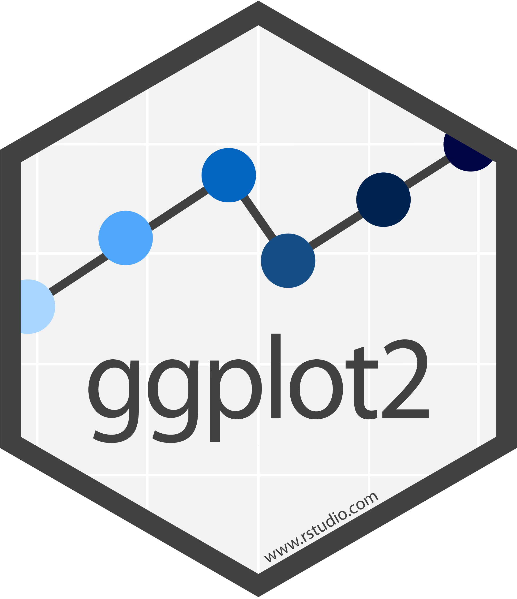

ggplot(tb_us, aes(x = year,
y = count,
fill = sex)) +
geom_bar(stat = "identity") +
facet_grid(~ age) A Grammar of Graphics
SISBID 2026
https://github.com/dicook/SISBID
TWO MINUTE CHALLENGE 🔮 👽 👼
Write down as many types of data plots that you can think of.
Go to menti.com and enter code 2979 2396
🕐 You've got 2 minutes!
What is a data plot?
- data
- aesthetics: mapping of variables to graphical elements
- geom: type of plot structure to use
- transformations: log scale, …
- layers: multiple geoms, multiple data sets, annotation
- facets: show subsets in different plots
- themes: modifying style
Why?
With the grammar, a data plot becomes a statistic.
It is a functional mapping from variable to graphical element. Then we can do statistics on charts!
With a grammar, we don’t have individual animals in the zoo, we have the genetic code that says how one plot is related to another plot.
Elements of the grammar

ggplot(data = <DATA>) +
<GEOM_FUNCTION>(
mapping = aes(<MAPPINGS>),
stat = <STAT>,
position = <POSITION>
) +
<COORDINATE_FUNCTION> +
<FACET_FUNCTION>7 key elements:
- DATA
- GEOM_FUNCTION
- MAPPINGS
- STAT
- POSITION
- COORDINATE_FUNCTION
- FACET_FUNCTION
Example: Tuberculosis data
(Current) TB case notifications data from WHO.
Also available via R package getTBinR.
{kind=link}
TWO MINUTE CHALLENGE 🔮 👽 👼
Go to menti.com and enter code 2979 2396
- What do you learn about tuberculosis incidences in the USA from this plot?
- Give three changes to the plot that would improve it.
Results 🔮 👽 👼
- Incidence is declining, in all age groups, except possibly 15-24
- Much higher incidence for over 65s and 35-44 year olds
- We do not know the underlying population size
- There appears to be a structural change around 2008. Either a recording change or a policy change?
- Missing information for 1998 # no longer true
- Cannot compare counts for male/female using stacked bars, maybe fill to 100% to focus on proportion
- Colour scheme is not color blind proof, switch to better palette
- Axis labels, and tick marks?
Fix the plot
Manually selected fill colors; theme with white background for better contrast
{kind=link}
Compare males and females
{kind=link}
🔮 👽 👼 TWO MINUTE CHALLENGE
- What do we learn about the data that is different from the previous plot?
- What is easier and what is harder or impossible to learn from this arrangement?
- Focus is now on proportions of male and female each year, within age group
- Proportions are similar across year
- Roughly equal proportions at young and old age groups, more male incidence in middle years
Separate plots
{kind=link}
- Counts are generally higher for males than females
- There are very few female cases in the middle years
- Perhaps something of a older male outbreak in 2007-8, and possibly a young female outbreak in the same years
Make a pie
{kind=link}
This isn’t a pie, it’s a rose plot!
Stacked bar
{kind=link}
Pie chart
{kind=link}
🔮 👽 👼 TWO MINUTE CHALLENGE
- What are the pros, and cons, of using the pie chart for this data?
- Would it be better if the pies used age for the segments, and facetted by year (and sex)?
Go to menti.com and enter code 2979 2396
Line plot vs barchart
ggplot(tb_us, aes(x=year, y=count, colour=sex)) +
geom_line() + geom_point() +
facet_grid(~age_group) +
scale_colour_manual("Sex", values = c("#DC3220", "#005AB5")) +
ylim(c(0,NA)) +
theme_bw()
- We can read counts for both sexes
- Males and females can be directly compared
- Temporal trend is visible
Line plot vs barchart
tb_us |> group_by(year, age_group) |>
summarise(p = count[sex=="m"]/sum(count)) |>
ggplot(aes(x=year, y=p)) +
geom_hline(yintercept = 0.50, colour="grey50", linewidth=2) +
geom_line() + geom_point() +
facet_grid(~age_group) +
ylab("Proportion of Males") +
theme_bw()
- Attention is forced to proportion of males
- Direct comparison of counts within year and age
- Equal proportion guideline provides a baseline for comparison
Your turn
Make sure you can make all the TB plots just shown. If you have extra time, try to:
- Facet by gender, and make line plots of counts of age.
- Show the points only, and overlay a linear model fit.
Resources
- posit cheatsheets
- ggplot2: Elegant Graphics for Data Analysis, Hadley Wickham
- ggplot2 web site
- R Graphics Cookbook, Winston Chang
- Data Visualization, Kieran Healy
- Data Visualization with R, Rob Kabacoff
- Fundamentals of Data Visualization, Claus O. Wilke
 This work is licensed under a Creative Commons Attribution-NonCommercial-ShareAlike 4.0 International License.
This work is licensed under a Creative Commons Attribution-NonCommercial-ShareAlike 4.0 International License.